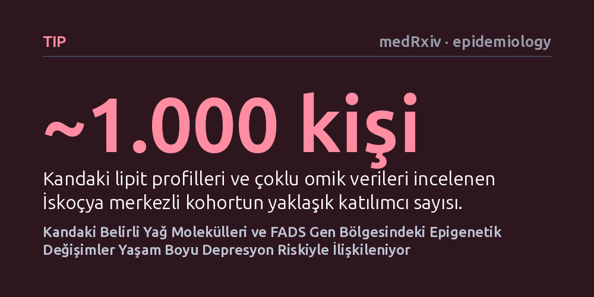

TIP · medRxiv · epidemiology · 2026-09-08
Yaklaşık bin kişilik bir grupta kandaki yağ moleküllerinin genetik ve epigenetik haritası çıkarılarak bunların majör depresyonla bağlantısı incelendi. Araştırmacılar depresyonla ilişkili 23 yağ türü saptarken, FADS gen kümesindeki DNA metilasyonunun bu yağ profillerini depresyonla buluşturan kritik bir moleküler katman olduğunu belirledi.
Depresyonun yalnızca psikolojik bir duygu durumundan ibaret olmadığını; kanda dolaşan yağ molekülleri, genetik yatkınlık ve genlerin çalışmasını yöneten epigenetik işaretlerle somut bir biyolojik temele dayandığını gösterir.

Dünya genelinde milyonlarca insanı etkileyen majör depresif bozukluk, yalnızca bireyin ruh halini karartan bir duygu durumu değil, biyolojik temelleri olan karmaşık bir psikiyatrik hastalıktır. Ne var ki günümüz tıbbında kimin bu hastalığa yakalanacağını ya da hangi hastanın hangi tedaviye olumlu yanıt vereceğini önceden tahmin etmek son derece zordur. Bu tablonun ardında yatan en temel engel, hastalığın moleküler düzeydeki mekanizmalarını tam olarak kavrayamamış olmamız ve kanda güvenilir biyobelirteçlerin bulunmayışıdır.
Son yıllarda yapılan araştırmalar, depresyon yaşayan bireylerin kanındaki yağ (lipit) profillerinin sağlıklı bireylerinkinden farklılık gösterdiğine işaret etmektedir. Beyin dokusunun büyük kısmının yağlardan oluştuğu ve sinir hücreleri arasındaki iletişimin yağ metabolizmasına sıkı sıkıya bağlı olduğu düşünüldüğünde bu bağlantı şaşırtıcı değildir. Ancak bugüne kadarki çalışmalar, kandaki bu yağ değişimlerinin genetik yapı ve genlerin çalışma biçimini belirleyen epigenetik süreçlerle nasıl etkileştiğini bütüncül bir yaklaşımla ortaya koyamamıştı.
İskoçya merkezli bu çalışmada araştırmacılar, yaklaşık 1.000 katılımcıdan oluşan bir kohortun kan örneklerini mercek altına aldı. Araştırmacılar, kanda bulunan yüzlerce farklı yağ türünü tek tek ve yüksek duyarlılıkla tanımlayabilmek için ileri bir analiz yöntemi olan kütle spektrometresinden yararlandı. Bu sayede genel yağ düzeyleri yerine her bir lipit türü ayrı ayrı ölçülebildi.
Çalışmayı benzerlerinden ayıran en önemli yön, sadece yağ ölçümüyle yetinilmeyip birden fazla biyolojik katmanın aynı anda incelenmiş olmasıdır. Katılımcıların klinik depresyon geçmişinin yanı sıra DNA dizilimlerindeki genetik varyantlar ve genlerin çalışmasını kontrol eden DNA metilasyonu (epigenetik etiketler) aynı veri setinde harmanlandı. Böylece araştırmacılar, genetik yatkınlık, epigenetik kontrol ve kan yağları arasındaki karmaşık ilişki ağını istatistiksel modellerle aydınlatmayı hedefledi.
Kapsamlı analizlerin sonucunda kandaki bireysel lipit türleriyle ilişkili 77 yaygın genetik varyant ve 82 genom çapında DNA metilasyon noktası saptandı. En dikkat çekici bulgu ise, katılımcıların yaşam boyu depresyon geçmişiyle doğrudan bağlantılı 23 farklı yağ türünün belirlenmesi oldu. Bu yağlar arasında hücre zarının yapısında ve hücre içi sinyalleşmede kritik görevler üstlenen lizofosfatidilkolin (LPC), diaçilgliserol (DG) ve fosfatidilkolin (PC) gibi sınıflara ait moleküller yer aldı.
Genetik, epigenetik ve lipit verileri bir arada analiz edildiğinde, 'FADS' adı verilen gen kümesi öne çıktı. FADS bölgesindeki genetik varyantların ve DNA metilasyonunun, yaşam boyu depresyonla da ilişkili olan belirli yağ türleriyle bağlantılı olduğu görüldü. Yazarlar bu entegre sonucun değerini 'bulgularımız, FADS gen kümesinin lipit metabolizmasındaki rolüne ve depresyonla ilişkisine daha fazla destek sunmaktadır' ifadesiyle vurguladı.
Elde edilen sonuçlar, depresyon ile vücuttaki yağ metabolizması arasındaki bağa DNA metilasyonunu da ekleyerek yeni bir moleküler katman kazandırıyor. FADS gen kümesi, vücudun doymamış yağ asitlerini işleme kabiliyetini doğrudan düzenleyen enzimleri kodlar. Dolayısıyla bu bölgedeki genetik ve epigenetik değişimlerin kan yağlarını nasıl şekillendirdiğini ve bunun beyin işlevlerine nasıl yansıdığını anlamak, gelecekte kandan yapılabilecek biyobelirteç testleri veya metabolizmayı hedefleyen tedavi yaklaşımları için değerli bir zemin oluşturabilir.
Bununla birlikte çalışmanın sonuçlarını değerlendirirken temkinli olmak gerekir. Bu araştırma gözlemsel bir birlikteliği göstermektedir; saptanan yağlardaki değişimlerin mi depresyona yol açtığı, yoksa depresyonun yarattığı fizyolojik stresin mi yağ profilini değiştirdiği henüz kesinleşmemiştir. İskoçya'daki yaklaşık 1.000 kişi üzerinde yürütülen bu önbaskı çalışmasının, farklı toplumlarda ve daha geniş kitlelerde bağımsız araştırmalarla tekrarlanması ve biyolojik mekanizmaların laboratuvar deneyleriyle aydınlatılması gerekmektedir.